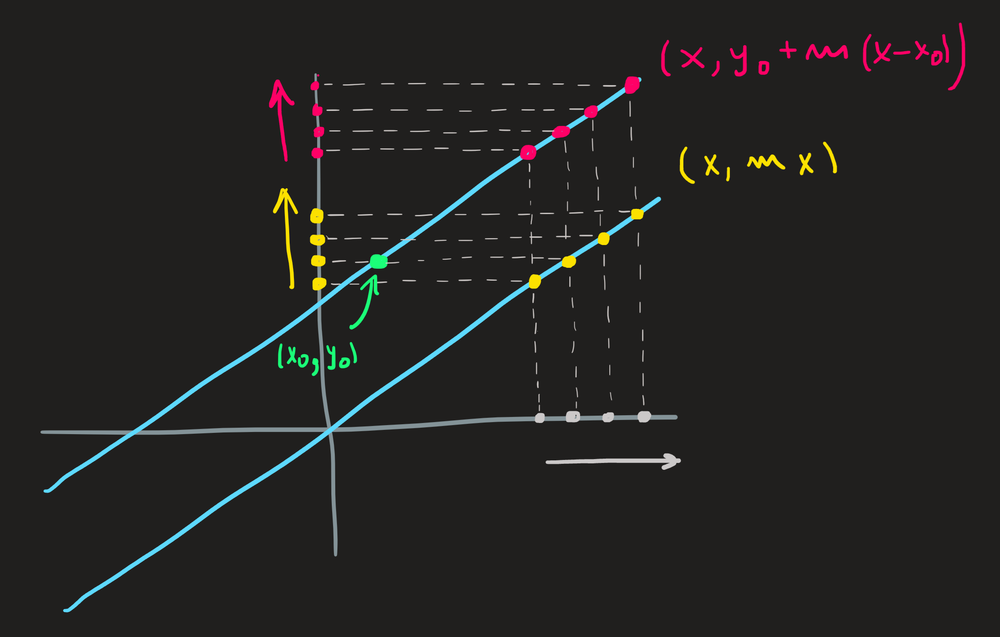

Polynomials of degree one are lines
Polynomials of degree one are lists of ordered pairs of the form:
\[ \{(x,y)\in \mathbb{R}^2\,\,|\,\, y=a_1 x+a_0\} \tag{1}\]
The constants \(a_1\) and \(a_0\) are either given to us or we must choose them - we say they are parameter of the function - they are the weights of \(x^1\) and \(x^0\) in the linear combination \(a_1x+a_0\). Here are some examples of choices:
\[ \begin{align} &\{(x,y)\in \mathbb{R}^2\,\,|\,\, y = -2x \}\\ &\{(x,y)\in \mathbb{R}^2\,\,|\,\, y = 2x \}\\ &\{(x,y)\in \mathbb{R}^2\,\,|\,\, y = x+1 \}\\ &\{(x,y)\in \mathbb{R}^2\,\,|\,\, y = -2x-1 \} \end{align} \]
Graphically these corresponds to lines in a plane:
In maths, sometimes, changing just the aesthetic of the problem can bring great insight into what it means. Here is some changes into the aesthetic of the equation \(y=a_1x+a_0\):
\[ y=a_1x+a_0 = a_1 x + a_0 + a_1 x_0 -a_1 x_0 = a_1(x-x_0)+(a_0+a_1x_0) \tag{2}\]
Now define the following quantities:
\[ m:=a_1 \qquad y_0:=a_0+a_1x_0 \tag{3}\]
Even if you have no clue how this can be a good idea, just wait and appreciate the consequences - the equation \(y=a_1x+a_0\) shows up dressed differently:
\[ y=m(x-x_0)+y_0 \tag{4}\]
the new clothing is introduced in Equation 3 .
It look different, a new aesthetic, but it is still the same equation as \(y=a_1x+a_0\) because the parameters \(a_1\), \(a_0\), \(m\), \(x_0\) and \(y_0\) are related through the equations Equation 3. If values of some of these parameters are given, these equations can be used to compute the other.
As example: You give \(a_0\) and \(a_1\) and I can compute \(x_0\) and \(y_0\). How? If you give me \(a_0=3\) and \(a_1=2\), I pick an arbitrary \(x_0\), for example \(x_0=4\) and compute
\[ y_0=3+2\times 4=11 \]
In conclusion we have two equations aesthetically different but exactly the same:
\[ y=2x+3 \iff y=2(x-4)+11 \tag{5}\]
The right hand side aesthetic is much better because it allow us to see easily how fast these polynomials of degree one increase.
How fast does the function increase?
The constant \(m\) (the \(2\) in Equation 5) is called the slope of the line, what does it mean the value of the slope? The meaning of this constant - in fact any constant in mathematics - can be deduced by analyzing the equation in which it appears. In this case, we understand \(m\) by understanding \(y=m(x-x_0)+y_0\), rearranging it we find:
\[ m=\frac{y-y_0}{x-x_0} \tag{6}\]
which tells us that \(m\) is a ratio of two distances, the height of the triangle \(y-y_0\) and the length of the base of the triangle \(x-x_0\).

Since \(m\) is the ratio of these two distances, its sign determines weather the function is increasing or not. Observing ?@fig-window we see \(x-x_0>0\) and \(y-y_0>0\) therefore for this particular choice of two points we find \(m>0\), the same conclusion would hold for any other. When \(m\) is positive, then the \(y\)’s in \((x,y)\) increase when the \(x\)’s increase as well.
By the same line of reasoning the \(m<0\) would correspond to decreasing function, one where as \(x\) increases then the \(y\)’s decrease. And by the way, \(m=0\) correspond to horizontal lines but these are polynomials of degree zero and not of degree one. The larger \(m\) becomes the closer the line is to a vertical line, but it never truly becomes a vertical line.
We can actually arrive at these conclusions just looking at \(y=m(x-x_0)+y_0\), no rearranging required: when \(m\) is positive, then the greater \(x-x_0\) is, the more we add to the default value \(y_0\), thus the \(y\) must increase; if on the other hand \(m\) is negative, the term \(m(x-x_0)\) can only become more negative as \(x-x_0\) increases, thus lowering the value of \(m(x-x_0)+y_0\), that is, the value of \(y\), the function must be decreasing when \(x-x_0\) increases.
Zeros
What are the zeros in \(P_1\)? Look at Figure 1, there are (in this case) two types of zeros: \(x\)-zeros and \(y\)-zeros. The \(x\)-zeros occur when the \(x\) coordinate is zero and the \(y\)-zeros when \(y\) is zero. In other words, the zeros of a polynomials of degree one are the ordered pairs (in \(P_1\)) that satisfy either one of these equations:
\[ \begin{equation}\begin{cases}y=y_0+m(x-x_0)\\y=0\end{cases}\qquad\qquad\begin{cases}y=y_0+m(x-x_0)\\x=0\end{cases}\end{equation} \]
\[ \begin{equation}\begin{cases}y_0=a_1x_0+a_0\\y=0\end{cases}\qquad\qquad\begin{cases}y=a_1x+a_0\\x=0\end{cases}\end{equation} \]
\[ (x_0,0)\in \{(x,y)\in \mathbb{R}^2\,\,|\,\, y = a_1x+a_0 \} \]
\[ (0,y_0)\in \{(x,y)\in \mathbb{R}^2\,\,|\,\, y = a_1x+a_0 \} \]
Solving the first systems of equations we get \(x=(0-y_0)/m+x_0\) and solving the second \(y=y_0+m(0-x_0)\). Hence we know zeros of \(P_1\):
\[ \begin{align} &\textit{x-zero:} \qquad (0,y_0-mx_0)\\ &\textit{y-zero:} \qquad (x_0-y_0/m,0) \end{align} \]
When \(x\) is large, then what?
We can get to know qualitatively what happens with points coordinates of \(P_1\) at its extreme ends of the set by supposing \(x\) is a very, very large number; there is however an important key point: we are not particularly worried about a specific large value of \(x\), like \(x=10^{100}\) , and its corresponding \(y\); what we really want to know is - as \(x\) is getting larger and larger, how does \(y\) behave then? It is a dynamical process, not a specific evaluation of the function.

Paraphrased differently, we want to know what happens to \((x,y)\) during the process of making \(x\) bigger and bigger? To state that \(x\) is getting bigger and bigger, we write \(x\longrightarrow \infty\). In such a dynamic case, what happens with the value \(y\)? Meaning, what is the dynamic solution \(y\) of the system:
\[ \begin{equation}\begin{cases}y=y_0+m(x-x_0)\\x\longrightarrow +\infty\end{cases}\end{equation} \tag{7}\]
Lets make an intuitive guess about the solution of this problem (later, when we study limits we’ll see a more systematic way to solve these problems), the Figure 2 helps a lot. To understand how the values of \(y\) behave when \(x\) increases, we have to understand how the calculation \(y_0+m(x-x_0)\) behaves, when we keep increasing \(x\). A key aspect of it, is that the term \(m x\) gets larger and larger while \(y_0-mx_0\) remains a constant, eventually, \(mx\) is so much larger than this constant (we are increasing \(x\) after all) that our original equation \(y=y_0+m(x-x_0)\) becomes approximately given by \(y\sim mx\). The functions \(y_0+m(x-x_0)\) and \(mx\) are different! But when \(x\) is large they are very similar because the constant \(y_0-mx_0\) becomes irrelevant. Now we shift our focus to the approximate equation and try to solve it:
\[ \begin{equation}\begin{cases}y\sim mx\\x\longrightarrow +\infty\end{cases}\end{equation} \tag{8}\]
This is easy, because its just an atomic polynomial. The dynamical solution to this problem is [ \(y\) will increase when \(x\) increases], we write the answer as \(y\longrightarrow +\infty\) when \(m\) is positive. As a consequence the answer to Equation 7 is also \(y\longrightarrow +\infty\).
Observe that the function \(y\sim mx\) is not equal to \(y=y_0+m(x-x_0)\), and thus their graphs are not equal, but when \(x\) is very large, they are similar, see picture below. Solving Equation 8 we automatically get the answer to the problem Equation 7 . Both answers are \(y\longrightarrow+\infty\).

If on the other hand \(m\) is negative then, by the same reasoning, \(y\) also becomes very negative.
Awful Exercise: What happens to \(y\) when \(x\longrightarrow-\infty\)?